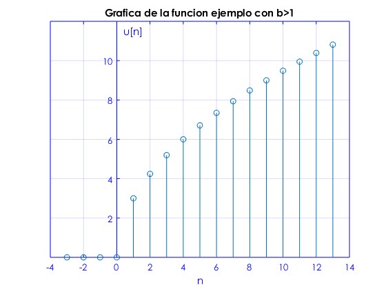
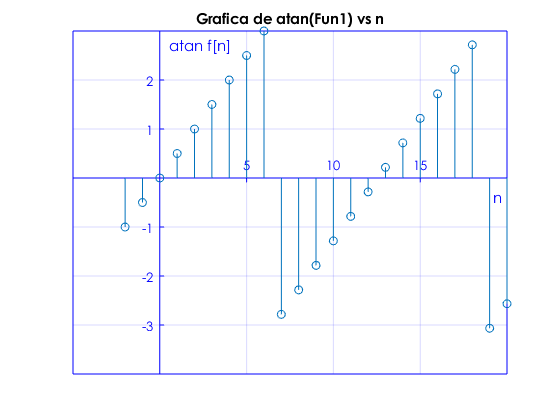
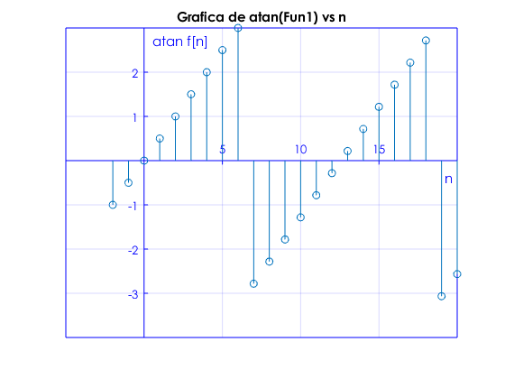

Práctica 3: Señales en tiempo discreto
Contents
Portada
Intituto Politécnico Nacional
Unidad Profecional Interdiciplinaria en Ingeniería y Tenologías Avanzadas
Análisis de señales y sistemas
Práctica 3: Señales en tiempo discreto. Grupo: 2MV1
Profesor: Dr. Rafael Martinez Martinez
Integrantes:
Calva Lima Leonardo Ashley
Escarcega Corona Luis
Morales Sanabria Edgar Esteban
clear; clc; close all;
Objetivos
- Manipulación básica de MATLAB.
- Gráficas de señales reales y complejas discretas.
- Transformación de señales discretas (escalamientos y traslaciones).
- Calculo de energía y potencia de señales discretas
Introdución
- Escalamiento horizontal de señales discretas
Definimos el escalmiento de señales en tiempo dicreto de la siguiente forma:
en ontras palabras escalamos b unidades a la funcion original para regresar una escala. Cuando el valor de es sufre una compresión,haciendo la señal más pequeña, de esta manera podemos decir que se pierden datos cuando hay compresiones de señales discretas haciendo que solo se conserven los b-ésimos muestras. Así tambien la señal sufre una expansión cuando toma valores especificos en un intervalo dado por Esto se ve entiende mejor haciendo un ejemplo, graficamos la señal ![$f[n]=n^1/2(u[n]-u[n-13])$](Practica3_eq14616825701107149092.png) con valores distintos de , daremos a valores positivos, negativos y fracionarios para poder llegar a ciertas concluciones que nos harán entender de mejor manera esto.
con valores distintos de , daremos a valores positivos, negativos y fracionarios para poder llegar a ciertas concluciones que nos harán entender de mejor manera esto.
Graficamos la señal con que será nuestra señal original.
n=-3:13;
b=1;
r=@(n) ((n.^(1/2)).*b).*(n>=0);
gratdd3(n,r(n));
title ('Grafica de la funcion ejemplo original')
En nuestra gráfica notamos que la señal mostrada es la qe inicialmente tendremos (la señal original)
Ahora graficamos la señal con que será nuestra señal escalada horizontalmente unidades.
n=-3:13;
b=3;
r=@(n) ((b.*n.^(1/2))).*(n>=0);
gratdd3(n,r(n));
title ('Grafica de la funcion ejemplo con b>1')
 graficamos la señal con que será nuestra señal escalada horizontalmente .
n=-3:13;
b=1/2;
r=@(n) ((b.*n.^(1/2))).*(n>=0);
gratdd3(n,r(n));
title ('Grafica de la funcion ejemplo con 0<b<1')
Depués de analizar las gráficas podemos deducir algunos puntos claves para la translación horizontal de señales discretas.
- Cuando la señal sufre una compresion (se hace más pequeña).
- Si tenemos una valor de la señal al sufrir la compresión se pierden datos numericos.
- Cuando la señal sufre una expansión (se hace más grande).
- Si tenemos un valor de solo se podrán graficar valores enteros de la función, los valores decimales se pierden completamente.
Desarrollo
Establecemos una serie de ejercicios denotados por ciertas caracteristicas a cumplir, a continuacion los detallaremos se resolveran.
- Crea una función que se llame fun1 y reciba dos parametros y la función debe regresar la evaluación , esta función debe trabajar con , , . Debe mostrar su código en el reporte (sin ejecutar).
- Construya una función que gráfique funciones de en el formato de su elección y pruebe su código mostrando la gráfica de vs para para , no debe incluir el código, solo el uso de la función para mostrar la gráfica, puede utilizar una función anonima para este fin
- Construya una función que gráfique funciones de en el formato de su elección y pruebe su código mostrando la gráfica de la función exponencial del primer problema, no debe incluir el código, solo el uso de la función para mostrarla gráfica. Reporte la gráfica de para , y (recuerde que ya tiene una función para esto). Reporte la gráfica de vs y vs (puedes con sultar con help la descripción de abs, angle, atan2). Solo reporte las graficas.
- Programe una función que calcule la energía de una señal en tiemp discreto la fucion se debe llamar energiadis. La función recibe dos paramétros de entrada: el vector de tiempo y las alturas asignadas. La función regresa la energia de la señal y despliega la gráfica de la señal. Debe mostrar su código en el reporte (sin ejecutar).
- Resuelva el problema 3.1.1 c) de Lathi, aplicando su función anterior
- Resuelve el problema 3.2.3 de Lathi
Solución problema 1.
Creamos una función con dominio en los complejos con entrada de parametros , , .
function [f] = Fun1(r,w,n) f=((r.^n).*(cos(n.*w)))+(((r.^n).*(sin(n.*w))).*1j); end
Solución problema 2.
Creamos una funcion anonima para la ejecucion de la gráfica de , sabemos que nuestra señal es causal por su multiplicacion con un escalon unitario por lo que limitamos a nuestra función anonima para valores enteros positivos de n, de esta manera con ayuda de nuestra funcion previamente diseñada lograremos ver la grafica con los valores del vector
n=-2:10;
a=0.9;
h=@(n) n.*(a.^n).*(n>=0);
gratdd3(n,h(n));
title ('Grafica de la fucnión x[n]=na^nu[n] vs n')
Solución problema 3
Ahora probamos la funcion inicial que hicimos, graficando la funcion con el vector de entrada con sus componenete reales e imaginarias de la funcion princiál, por lo que obtendremos la primera gráfica en 3 dimenciones. Se optiene la funcion de la magnitud de la funcion vs el vector Se obtiene la funcion del angulo de la funcion principal vs (Las graficas que se mencionaron pueden ser vistas de izquierda a derecha, de arrriba hacia abajo
n=-2:20; r=1.1; w=0.5; gratd3(n,real(Fun1(1.1,0.5,n)),imag(Fun1(1.1,0.5,n))); title ('Grafica de Fun1') gratdd3(n,abs(Fun1(1.1,0.5,n))); ylabel ('|f[n]|') title ('Grafica de |Fun1| vs n') gratdd3(n,angle(Fun1(1.1,0.5,n))); ylabel ('atan f[n]') title ('Grafica de atan(Fun1) vs n')
 
 Solución problema 4
Creamos la funcion energiadis para que en base a la entrada de dos vectores definidos como vector altura y vector tiempo (ambas con componenetes enteros) obtengamos la energía de la señal discreta y la gráfica de la misma.
function e = energiadis(t,a) ab=(abs(a).^2); e=sum(ab); gratdd3(t,a) end
Solución problema 5
Aplicamos la funcion definida anteriormente mediante el uso de los vectores altura y tiempo, ambos hechos de tal manera que obtengamos los datos necesarios de la señal discreta para la obtencion de su energia y su gráfica
a=[0,-3,-2,-1,0,1,2,3,0];
t=-4:4;
energiadis(t,a)
title ('Grafica de la funcion x[n]=n(n[n+4]-[n-4])')
ans =
28
Solucion problema 6
Para la resolución de este problema gráficaremos cada una de las señales Comenzamos graficado la funcion original
a0=[0,0,1,2,3,2,1,0,0]; t0=[-1,0,1,2,3,4,5,6,7]; gratdd3(t0,a0) title ('Señal original') % Graficamos la señal reflejada con respecto al origen x[-n]. a1=[0,0,1,2,3,2,1,0,0]; t1=[-7,-6,-5,-4,-3,-2,-1,0,1]; gratdd3(t1,a1) title ('señal reflejada con respecto al origen x[-n].') % Graficamos la señal desplazada 6 unidades a la izquierda x[n+6]. a2=[0,0,1,2,3,2,1,0,0]; t2=[-7,-6,-5,-4,-3,-2,-1,0,1]; gratdd3(t2,a2) title ('señal desplazada 6 unidades a la izquierda x[n+6].') % *NOTA*: ambas graficas x[n] y x[n+6] son similares por la geometria. % % Graficamos la señal desplazada 6 unidades a la derecha x[n-6]. a3=[0,0,1,2,3,2,1,0,0]; t3=[5,6,7,8,9,10,11,12,13]; gratdd3(t3,a3) title ('señal desplazada 6 unidades a la derecha x[n-6].') % Graficamos la señal con una compresión de 3 unidades x[3n]. a4=[0,0,1,2,3,2,1,0,0]; t4=[-.25,0,0.336,0.67,1,1.33,1.66,2,2.25]; gratdd3(t4,a4) title ('señal con una compresión de 3 unidades x[3n].') % Graficamos la señal con una expansión de 3 unidades x[n/3]. a5=[0,0,1,2,3,2,1,0,0]; t5=[-3,0,3,6,9,12,15,18,21]; gratdd3(t5,a5) title ('señal con una expansión de 3 unidades x[n/3].') % Graficamos la señal reflejada con respecto al origen y desplazada 3 unidades a la izquierda x[3-n]. a5=[0,0,1,2,3,2,1,0,0]; t5=[-4,-3,-2,-1,0,1,2,3,4]; gratdd3(t5,a5) title ('señal reflejada con respecto al origen y desplazada 3 unidades a la izquierda x[3-n].')

Apéndice.
https://drive.google.com/open?id=1LkvjN6H3k95vwI4NrpvXJCsylFglPtei
Referencias.
- Dr. Rafael Martinez Martinez. (2016). Se ?nales y Sistemas. 2018, de creativecommons.orgSitio web: http://rafneta.github.io/
- Dr.Gonzalo Hernandez Velazco. (2016). Desplazamiento. 2018, de Universidad Experimental del Táchira Sitio web: http://www.unet.edu.ve/aula10c/Asenales/Unid01/cuarto02.htm